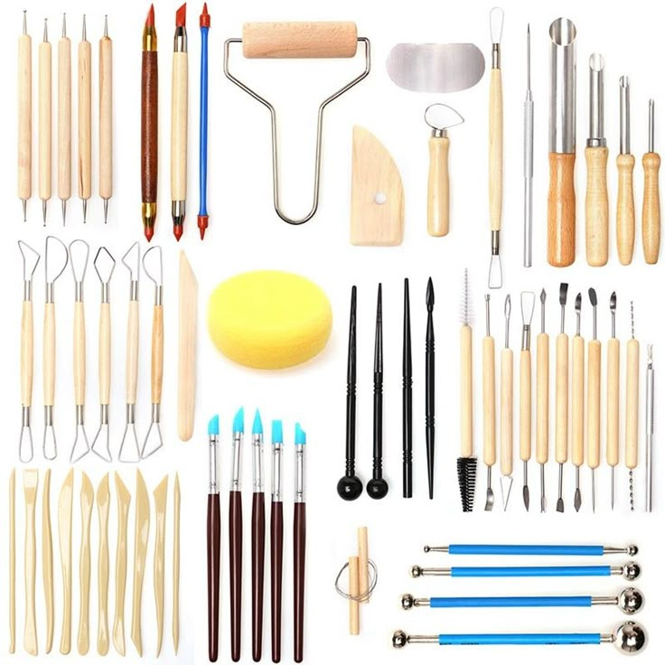
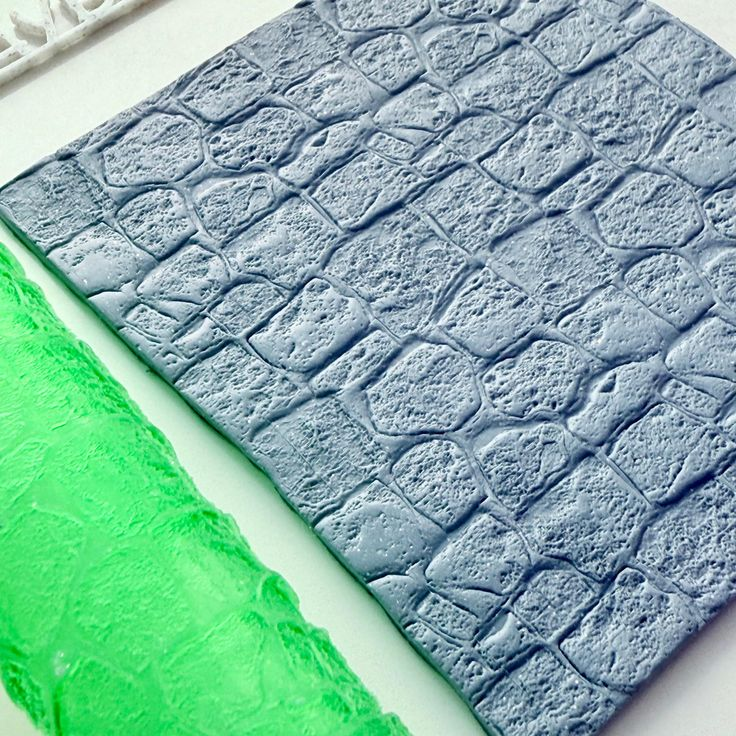

Jewelry and Clay
Novice Sculpting: Polymer Clay Sculpting 101
Author: Ladele Simi
19th July, 2025
Begin your journey into the colorful world of polymer clay with confidence and creativity!

Introduction: The Joy of Sculpting with Polymer Clay
If you're eager to express your creativity with your hands, sculpting with polymer clay is a fantastic place to start. As a versatile, beginner-friendly medium, polymer clay opens the door to endless artistic possibilities-from cute charms and jewelry to intricate figurines and home décor.
In this beginner's guide, you'll learn the fundamentals of polymer clay sculpting, discover essential tools and techniques, and gain valuable tips that will help you build confidence as a novice sculptor.
Whether you're looking to start a new hobby, craft custom gifts, or explore the artistic world of miniatures, Polymer Clay Sculpting 101 is your go-to starting point.
What Is Polymer Clay?
Polymer clay is a type of synthetic modeling material that remains soft until baked in a standard oven. Made from polyvinyl chloride (PVC), plasticizers, pigments, and other fillers, polymer clay is known for its vibrant colors, flexibility, and ability to hold fine details.
Why Choose Polymer Clay for Sculpting?
- Air doesn't dry it out
- Work at your own pace
- Oven-bake finish - No kilns required
- Comes in many colors - No painting necessary unless desired
- Inexpensive & accessible - Available in most art supply stores
- Beginner-friendly - Great for learning the basics of sculpture
Must-Have Supplies for Polymer Clay Beginners
Before diving into your first project, here are the essential tools and materials you'll need:
1 . Polymer Clay
Choose a high-quality brand like:
- Sculpey (Premo, Soufflé, or Original )
- FIMO (Soft or Professional )
- Kato Polyclay

2 . Clay Tools
While you don't need a full sculpting kit to start, a few basic tools make a big difference:
- Needle tool or pin - for fine details and piercing holes
- Blade or tissue blade - for cutting clean edges
- Ball stylus tools - for shaping and smoothing
- Rubber shapers - for blending seams
- Rolling pin or acrylic roller - to flatten clay evenly
3. Work Surface
Use a smooth, non-stick surface like a glass tile, ceramic tile, or silicone mat. Avoid wood or paper, which can absorb plasticizers and leave your clay sticky or cracked.
4. Oven and Thermometer
A conventional oven (not a microwave) is necessary to bake polymer clay safely and correctly.
Always use an oven thermometer to ensure accurate baking temperatures (typicsally 110-130°C / 230-265 °F depending on the brand).
5. Baking Sheet and Foil
Use a dedicated baking tray covered with parchment paper or aluminum foil. You can also use a foil tent to prevent browning during baking.
Getting Started: How to Condition Polymer Clay
Conditioning clay is crucial before sculpting. It ensures the clay is flexible, easy to work with, and will bake properly.
Steps to Condition Your Clay:
1. Cut a piece of clay and knead it with your hands until soft.
2. Roll it into a log, fold, and repeat.
3. Use an acrylic roller or clay pasta machine to make the process faster.
Tip: If your clay is too crumbly, warm it in your hands or add a few drops of clay softener.
Basic Techniques in Polymer Clay Sculpting
Now that your clay is prepped and tools are ready, let's explore some foundational sculpting techniques for beginners.
1 . Making Basic Shapes

- Ball - Roll the clay between your palms.
- Snake or rope - Roll into long cylinders.
- Tear drop - Pinch one end of a ball.
- Flat disc - Press a ball flat with your finger or roller.
2 . Blending Seams
Join two clay pieces seamlessly:
- Use your fingertip or rubber shaper to smooth the joint.
- Blend by lightly dragging clay from one part over the seam.

3 . Texture and Detail
Add realism with common items:
- Toothbrush - Skin texture
- Aluminum foil - Rock or rough surface
- Needle tool - Fur or hair lines
- Stamps and lace - Intricate textures
4 . Embedding Elements
Want to add eye pins or beads?
- Insert metal findings before baking, not after.
- Use superglue only after baking, never before.
First Project Ideas for Polymer Clay Beginners
Feeling inspired but not sure where to start? Try these beginner-friendly polymer clay project ideas:
- Miniature Food Charms
- Marbled Jewelry
- Floral Magnets
- Figurines and Animals
How to Bake Polymer Clay Safely
General Baking Tips:
- Check the package instructions for the correct temperature and time.
- Bake on a ceramic tile or cardstock to avoid shiny bottoms.
- Cover the sculpture with foil to protect from burning.
Common Baking Mistakes:
- Too hot: Causes burning or bubbling.
- Too cold or short: Leaves clay under cured and brittle.
- Uneven oven: Invest in an oven thermometer to be sure.
Painting and Sealing Your Sculptures
Painting Tips:
- Use acrylic paint (avoid watercolors or oils).
- Paint after baking and cooling.
- Apply in thin layers with a fine brush.
Sealing Your Work:
- Use a clay-compatible varnish or glaze to protect the surface and add shine.
- Avoid nail polish-it can cause clay to become sticky or discolored.
Storage and Clay Maintenance
Keep your polymer clay in airtight containers or zip lock bags, sorted by color. Store it in a cool, dry place away from direct sunlight and heat.
Avoid These Common Mistakes:
- Mixing brands improperly
- Touching raw clay then food
- Storing near electronics
Troubleshooting for Novice Sculptors
Problem 1: Clay is too hard or crumbly
- Try warming it up, using a pasta machine, or adding clay softener.
Problem 2: Sculpture broke after baking
- Re-bake at correct temp, reinforce with wire armature next time.
Problem 3: Colors smeared
- Clean hands and tools between colors, use rubbing alcohol to remove residue.
Problem 4: Burnt clay
- Check oven temperature with a thermometer, use a foil tent.
Tips to Grow Your Skills as a Beginner Sculptor
- Practice regularly
- Watch tutorials
- Join a community
- Experiment freely
- Keep a clay journal
Polymer Clay Safety Guidelines
- Never use clay tools with food
- Bake in a well-ventilated area
- Avoid inhaling sanding dust
- Wash hands before and after working
Conclusion: Unleash Your Creative Potential
Polymer clay sculpting is an enjoyable, beginner-friendly craft that allows you to explore art in three dimensions. With minimal tools and a bit of patience, you can create stunning pieces that express your personality, style, and imagination.
Frequently Asked Questions (FAQs)
Q1: Can I bake polymer clay in my kitchen oven?
Yes, it's safe as long as you follow the manufacturer's baking instructions and use a baking tray specifically for clay.
Q2: How do I keep fingerprints off my sculpture?
Use latex gloves, or smooth the surface gently with a soft brush or rubbing alcohol.
Q3: How long does polymer clay last?
Unopened clay lasts for years. Once opened, store it well to prevent drying or hardening.